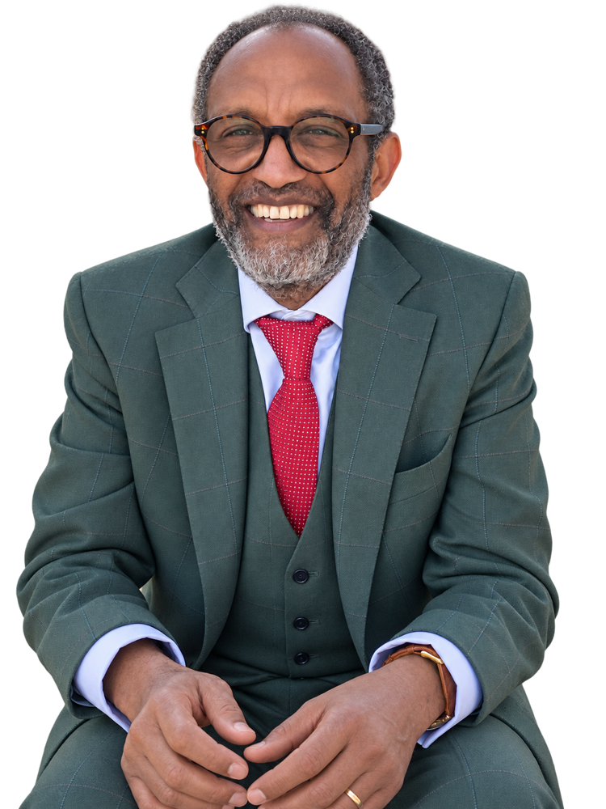

Wissenschaft
Professor an der Universität Leipzig
Prof. Dr. Getu Abraham ist Professor für Veterinärmedizin und steht für fachliche Tiefe, Verlässlichkeit und einen lösungsorientierten Arbeitsstil.
OBM-Wahl Leipzig 2026
"Mein Anspruch ist, die großen politischen und gesellschaftlichen Herausforderungen unserer Zeit auf die kommunale Ebene zu übersetzen."
Ein Oberbürgermeister, der zuhört, Menschen zusammenbringt und Leipzig mit Erfahrung, Offenheit und Tatkraft voranbringt.
56 Jahre, Tierarzt, Hochschullehrer, Stadtrat, verheiratet, zwei Kinder.

Prof. Dr. Getu Abraham verbindet wissenschaftliche Kompetenz, kommunalpolitische Erfahrung und einen klaren Blick für die Menschen in Leipzig.
Zur Person
Wissenschaft
Prof. Dr. Getu Abraham ist Professor für Veterinärmedizin und steht für fachliche Tiefe, Verlässlichkeit und einen lösungsorientierten Arbeitsstil.
Kommunalpolitik
Er kennt die politischen Prozesse der Stadt und weiß, wie kommunale Entscheidungen das tägliche Leben der Menschen konkret prägen.
Biografie
Leipzig ist für ihn Lebensmittelpunkt geworden. Diese biografische Perspektive prägt seinen Einsatz für eine offene, vielfältige Stadtgesellschaft.
Die Themen
Leipzig soll Innovationsstandort bleiben. Wissenschaft, Hochschulen, Unternehmen, Handel, Kultur und Kreativwirtschaft müssen stärker vernetzt werden, damit Ideen hier entstehen und hier Arbeitsplätze schaffen.
Bildung ist der Schlüssel für Teilhabe und Zukunft. Leipzig braucht eine starke Verbindung aus Hochschulen, Forschung, Schulen und gesellschaftlichem Aufstieg für die nächste Generation.
Sicherheit muss vom Menschen her gedacht werden: mit Prävention, guten Unterstützungsangeboten und konsequentem Handeln dort, wo es notwendig ist. Keine Symbolpolitik, sondern wirksame Lösungen.
Der Beitrag von Migrantinnen und Migranten, die Stärke urbaner Vielfalt und Räume für Kultur, Kunst und Begegnung gehören für Prof. Dr. Getu Abraham zu einem zukunftsfähigen Leipzig dazu.
Sein Ansatz
Leipzig braucht eine Stadtspitze, die große Herausforderungen auf die kommunale Ebene übersetzt, zuhört und die Bedürfnisse der Menschen ernst nimmt. Genau dafür steht Prof. Dr. Getu Abraham.
Politik beginnt mit Respekt, offenen Gesprächen und echter Präsenz in der Stadtgesellschaft.
Wirtschaft, Wissenschaft, Kultur und Zivilgesellschaft sollen nicht nebeneinander, sondern miteinander arbeiten.
Pragmatische Lösungen zählen mehr als politische Symbolik. Entscheidend ist, was in Leipzig tatsächlich wirkt.
Wofür er steht
Offenheit
Vielfalt ist Realität, Notwendigkeit und Bereicherung. Leipzigs Zukunft liegt in einem starken, unverkrampften Miteinander.
Leidenschaft
Lebensqualität braucht Räume. Kreative, künstlerische und wirtschaftliche Strukturen sollen Leipzig weiter prägen können.
Kompetenz
Forschung, Unternehmen, Ehrenamt, Sport und Prävention gehören zusammen, wenn Leipzig stark und gesund bleiben soll.
Mitmachen
Wenn Sie Prof. Dr. Getu Abraham unterstützen möchten, können Sie schon jetzt Ihr Interesse für Mitarbeit, Spenden oder den Newsletter vormerken.
Spenden
Unterstützen Sie die Kampagne direkt und sicher über unser Spendenformular.
Newsletter
Ein regelmäßiger Newsletter zu Terminen, Positionen und Neuigkeiten wird vorbereitet.
Newsletter vormerkenUnterstützen
Ob Gespräche im Umfeld, Veranstaltungen oder Mitarbeit im Wahlkampf: Unterstützung wird jetzt aufgebaut.
Auf Instagram folgen